【全景 · 俯拍】高档会议室，落地窗外是CBD天际线。我站在投影幕前，PPT上写着"AI无限可能"。三个投资人坐在对面。
我深吸一口气，开始了这个月第七次融资路演。这次一定行。
【近景 · 平视】我的特写，满脸自信，手指向PPT。
"我们的AI模型在三个核心指标上已经超越了市面上所有竞品——"
（说得连我自己都快信了。）
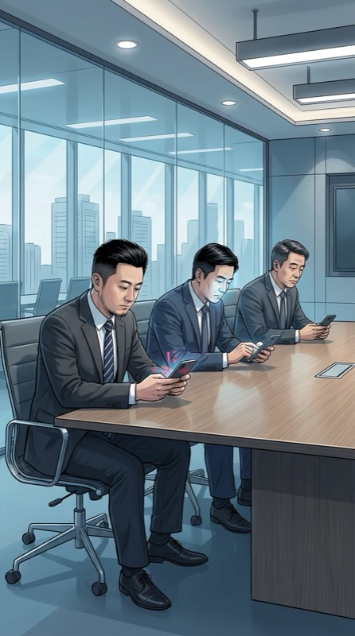
【中景 · 我的主观视角】三个投资人：左边那位在刷抖音，中间的在回微信，右边的……在玩消消乐。
（好家伙，我以为我在路演，原来我在给他们当白噪音。）
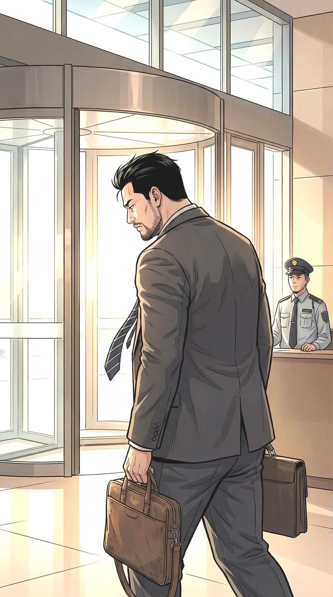
【双人中景 · 侧面】中间的投资人终于放下手机，抬头看了我一眼。
投资人："朱总，打断一下——你们跟ChatGPT有什么区别？"
我："……我们更穷。"
会议室陷入了三秒钟的死寂。我清楚地听到了右边那位消消乐过关的音效。
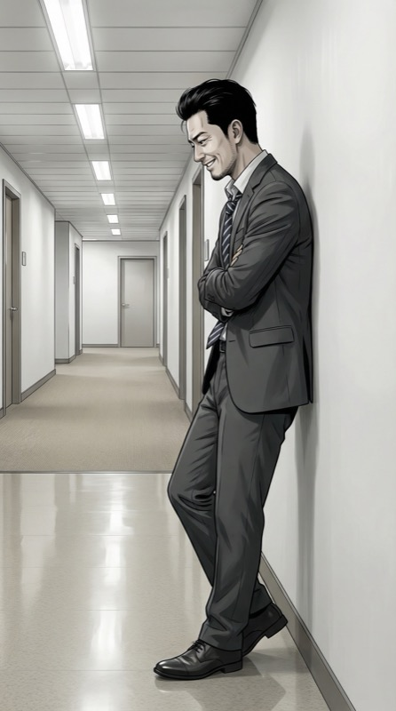
【全身 · 侧面走廊】我一个人靠在会议室门外的白墙上，领带松了，苦笑。
被拒了。意料之中。手里的BP文件夹比出门时轻了——因为投资人连拿都没拿。
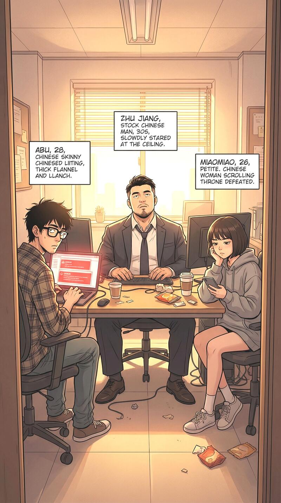
【半身 · 电梯内】电梯镜子里映出我的脸，从苦笑慢慢变成一种说不清的表情。
（第七次了。账上的钱还够发两个月工资。两个月后，我连"更穷"这个梗都用不上了，因为真穷了。）
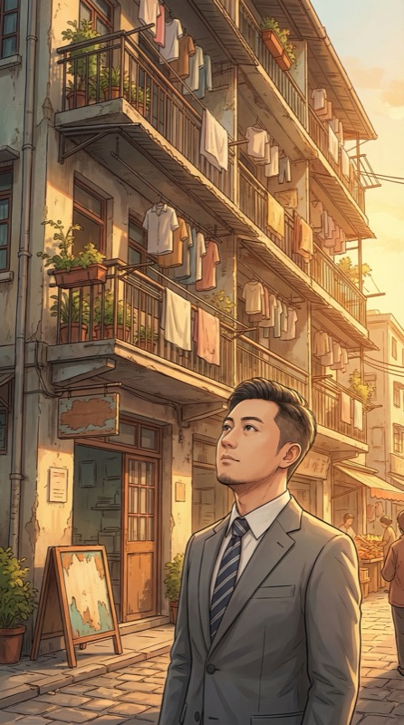
【远景 · 仰拍】一栋老旧的居民楼，阳台上晾着各家的衣服，一楼的小饭馆飘出油烟。三楼的窗户亮着灯。
我们的"办公室"在三楼。租金便宜，因为楼下是面馆，每天下午四点准时被油烟味轰炸。
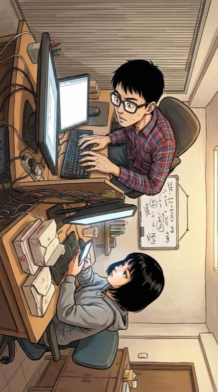
【广角中景】三张桌子挤在一起的小房间。阿布在角落敲代码，满屏红色报错。苗苗歪在椅子上刷手机。外卖盒堆成小山。
这就是我的团队。全部身家。一个写bug比feature多的技术合伙人，一个嘴比脑快的运营。加上我——一个连投资人都糊弄不了的CEO。
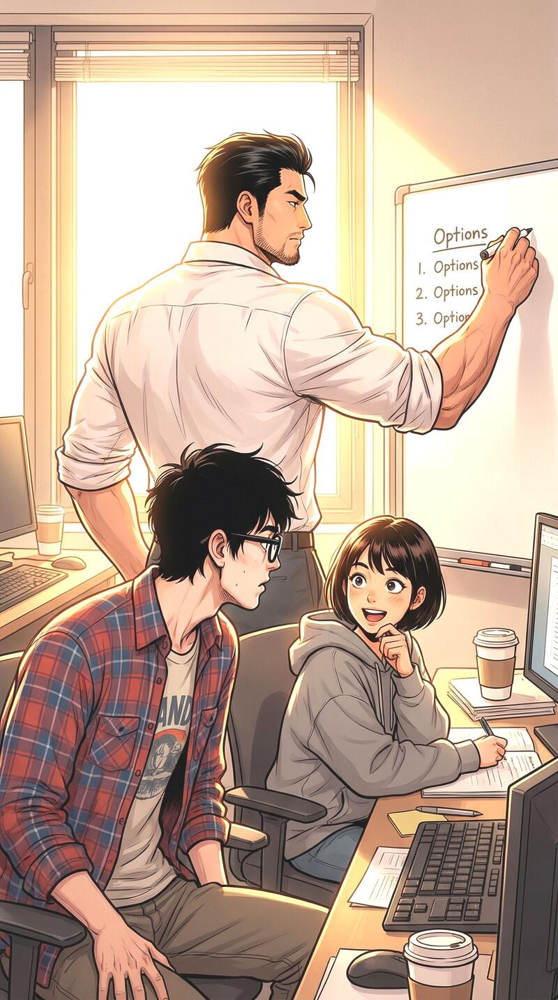
【中景 · 门口视角】我推开门。阿布和苗苗同时转头看我。
三个人对视了大概五秒钟。
苗苗（看我表情就懂了）："……又没戏？"
我："投资人问我们跟ChatGPT有什么区别。"
苗苗："你怎么回答的？"
我："我说我们更穷。"
阿布（没抬头，继续敲代码）："确实。"
【近景 · 侧面】阿布的特写。厚厚的黑框眼镜，鼻梁上滑下来一半。屏幕上密密麻麻的报错信息映在镜片上。
阿布，我的技术合伙人。写了三年代码，最大的成就是把一个bug修好后生出两个新的。社恐到什么程度呢——上次他跟快递员对话，结巴了七次。
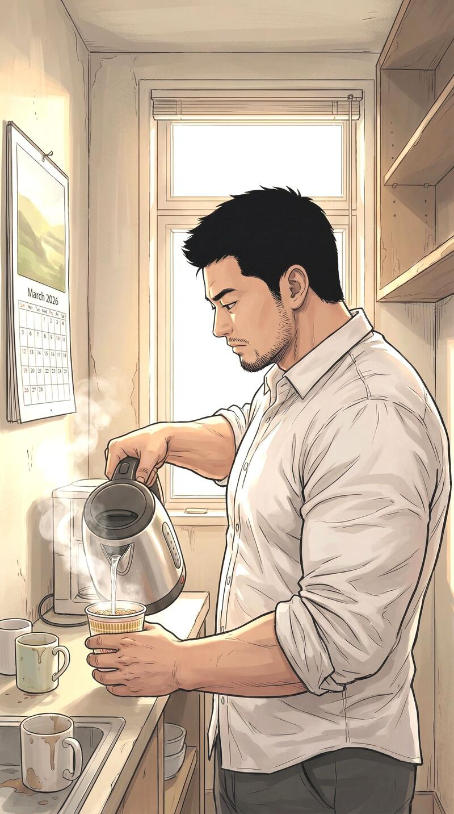
【近景 · 3/4侧】苗苗看着手机屏幕。招聘APP的推送通知堆了一屏。
苗苗，我的运营。大学学妹，毕业后不知道为什么跟了我创业。可能是因为我画的饼特别大。她最大的优点和缺点是同一个——嘴快。说出来的话经常是残酷的真相，但说的方式会让你哭笑不得。
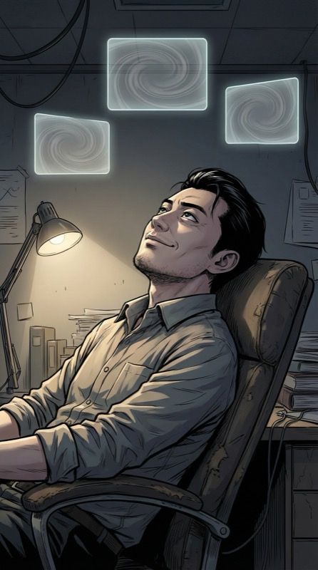
【半身 · 仰拍】我瘫坐在那把随时可能散架的转椅上，仰头望着天花板上的水渍。
⚡ 决策点 #1
A）散伙吧，各找出路
B）死磕到底，不信邪
C）先裁员，只留自己一个人
我选了B。不是因为我多有信念——是因为我连遣散费都发不起。
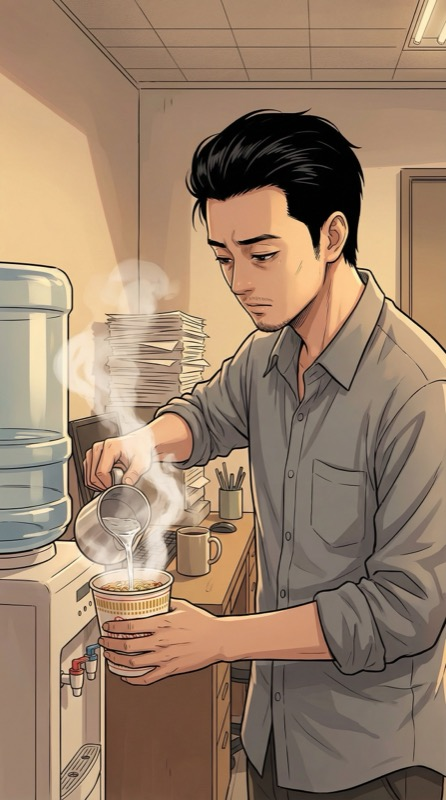
【中景 · 侧面】我站在饮水机旁，往泡面桶里倒热水。
晚上八点。阿布还在跟他的第47个bug搏斗，苗苗已经走了（明天有个面试，她以为我不知道）。我一个人在黑暗中泡泡面，觉得这大概就是我人生的低谷了。
（不过低谷也有好处——至少不会更低了。吧？）
【主观视角 · 特写】眼前突然凭空出现了一个半透明的界面。花里胡哨的边框，像素风图标，进度条卡在37%不动了。
叮～
我以为是加班太多出现幻觉了。
加载中… 37%……
………………
加载中… 37%……
「请拍打屏幕」
………………
加载完成！100%！
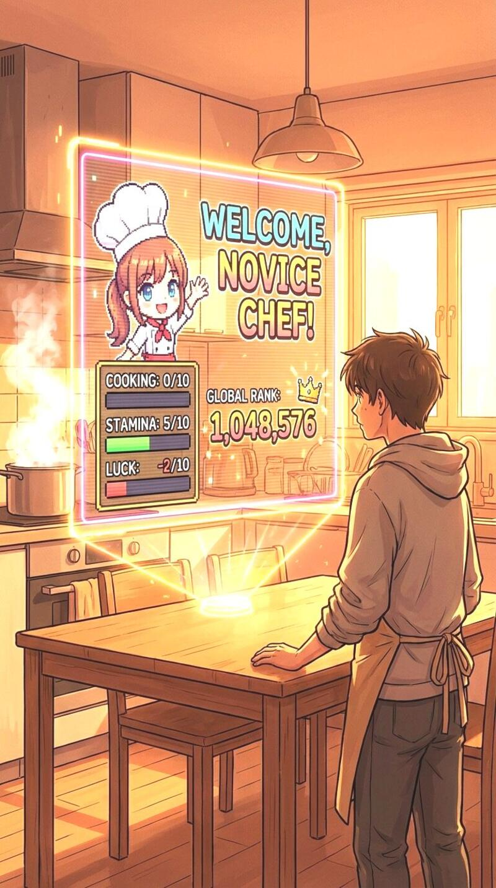
【全身 · 侧面 · 动态】我吓得往后一跳，泡面桶飞了出去，面汤洒了一地。
我："卧——！！！"
（我的泡面……红烧牛肉味的……刚泡好……）
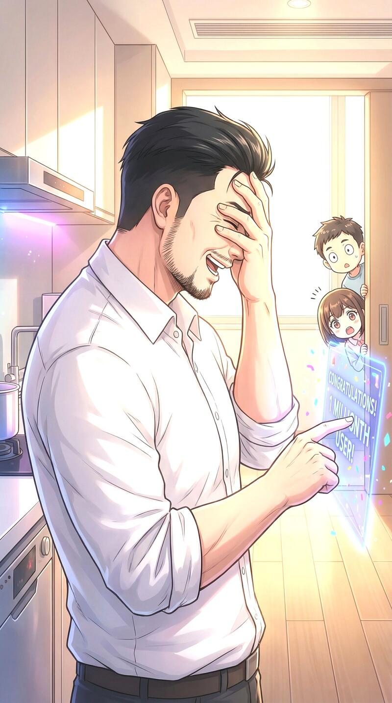
【系统界面特写】花里胡哨的主界面。金色边框配紫色渐变底色，像2008年的QQ空间。角落有个穿工地马甲的小人在跳舞。
恭喜宿主成为全球第1,048,576位打工人！
（没错，刚好是2的20次方，很吉利的）
您的初始等级为：临时工
温馨提示：本系统不支持退款、投诉和差评。
如有问题，请对着空气大喊"我要加班"。
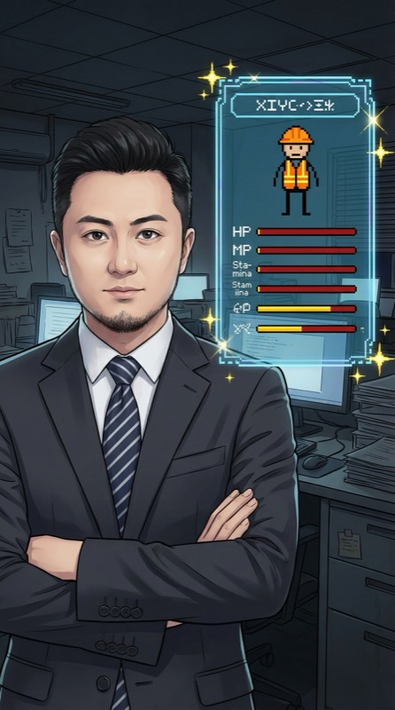
【系统界面】属性面板。小人图标穿着橙色工地马甲和安全帽，所有属性条都短得几乎看不见。
（临时工。我堂堂一个CEO，系统给我定级临时工。说实话……也挺准的。）
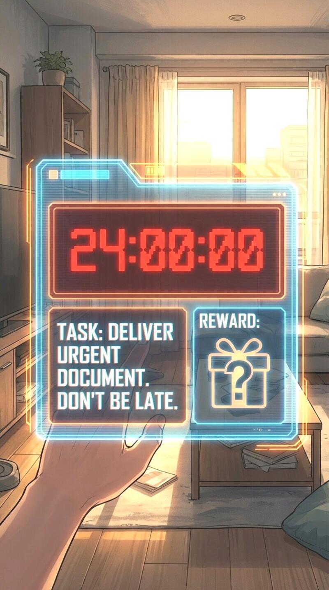
【三人中景】阿布听到动静走过来，苗苗……不对，苗苗不是走了吗？她居然在门口探头："听到你在尖叫，以为你被催债的找上门了。"
我（指着空气）："你们看到了吗？这里有个界面！"
阿布（推了推眼镜）："……没有。"
苗苗："老板，你是不是该去看看医生？"
（只有我能看到。太好了，这下连队友都觉得我疯了。）
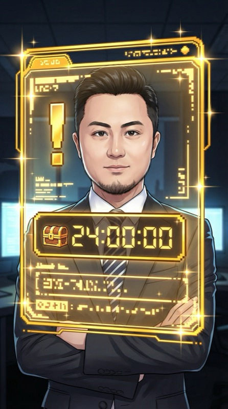
【系统界面】任务面板弹出。金色边框，倒计时器滴答作响。
📋 24小时内签下一个付费客户
⏰ 倒计时：24:00:00
🎁 奖励：随机Buff × 1
（温馨提示：失败惩罚未知。建议不要尝试。）
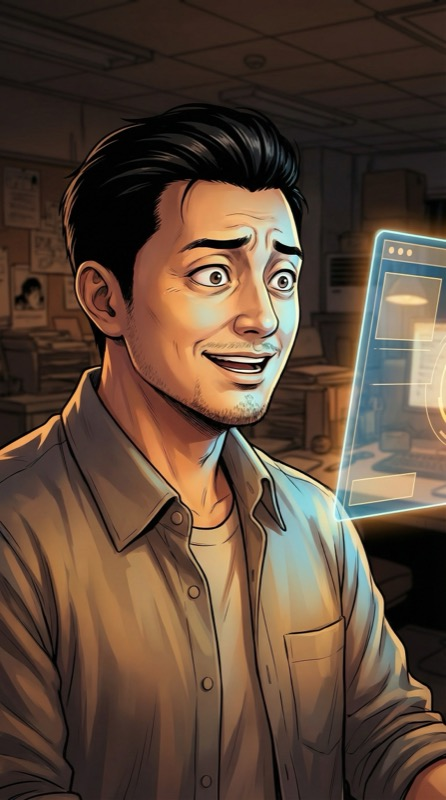
【近景】我盯着浮在空气中的任务面板，表情从震惊慢慢变成一种无奈的苦笑。
（24小时签下付费客户。我们连demo都跑不通。上次给甲方演示，系统当场蓝屏，阿布当场社死。）
但我注意到了"随机Buff"。不知道为什么，这三个字让我心里痒痒的。
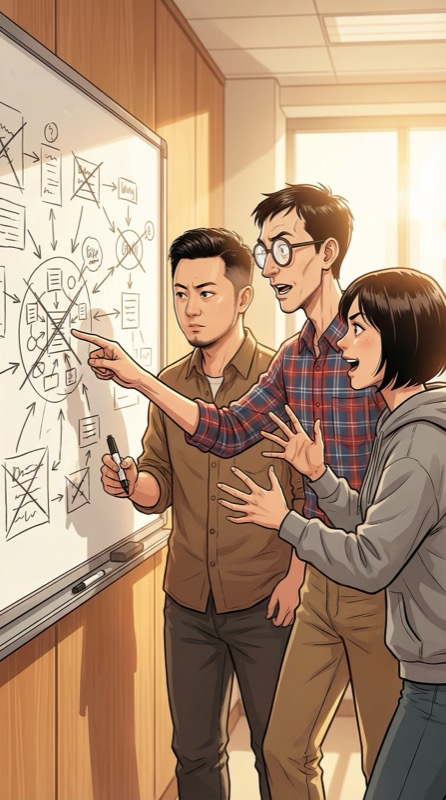
【中景 · 白板视角】三个人站在白板前。白板上写满了各种方案，大部分被划掉了。
苗苗："要不我们去地铁口发传单？"
阿布（举手）："我可以把我们的bug包装成feature。"
我："……你说的每一个字都让我很心累。"
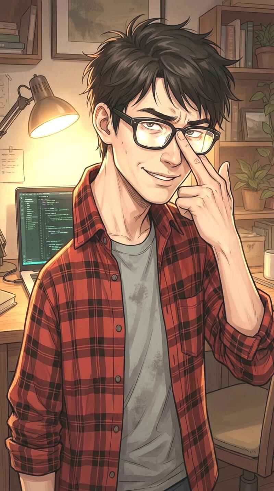
【三人中景 · 苗苗为中心】苗苗突然来了灵感，眼睛亮了，嘴巴已经比脑子先动了。
苗苗："不如——去楼下王叔的面馆推销AI点餐系统！"
我："面馆……一共十二道菜，客人基本上来了就说'老样子'。要什么AI点餐？"
苗苗："那就推销AI回复差评！王叔上次被人在美团上写了一星差评，气得把手机摔了！"
（等等……这个好像真的有搞头？）
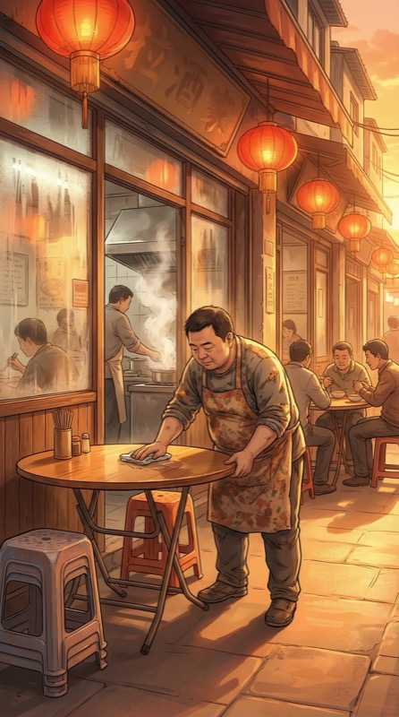
【远景 · 街景】楼下的面馆，热气腾腾。红灯笼，塑料凳子，玻璃窗上全是水汽。王叔在门口擦桌子。
王叔，五十多岁，开了二十年面馆。和我的关系就是——我欠他三个月面钱。
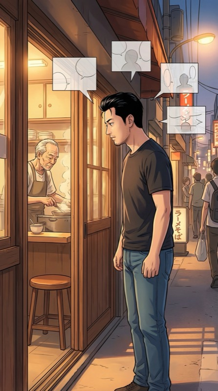
【全身 · 面馆门口】我换了T恤和牛仔裤，站在面馆门口犹豫。
⚡ 决策点 #2
A）正经商务pitch：掏出PPT讲AI趋势
B）帮他解决一个实际痛点：那个让他摔手机的差评
C）请他吃饭套近乎（用他自己店的面请他吃……）
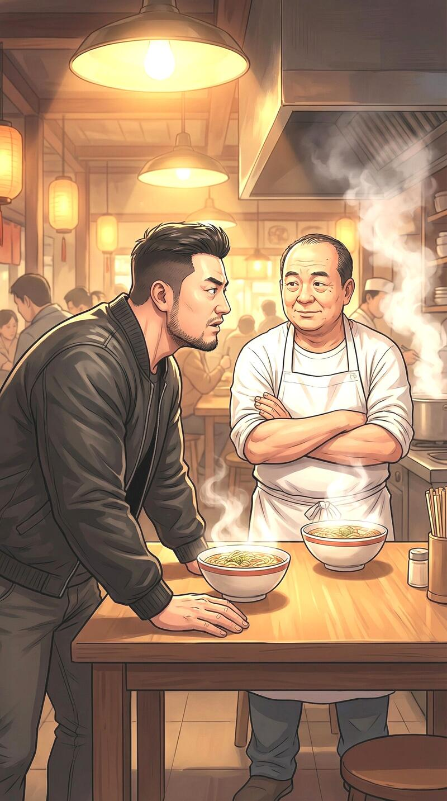
【半身】王叔。微胖，围裙上沾着油渍，脸上带着做了二十年生意的那种精明和憨厚。
王叔："哟，小朱。来还面钱的？"
我："王叔……今天来是想帮你个忙。"
王叔（警觉）："上次你说帮忙，差点把我的收银系统搞瘫痪了。"
我："那次是阿布的锅！这次不一样，真的！"
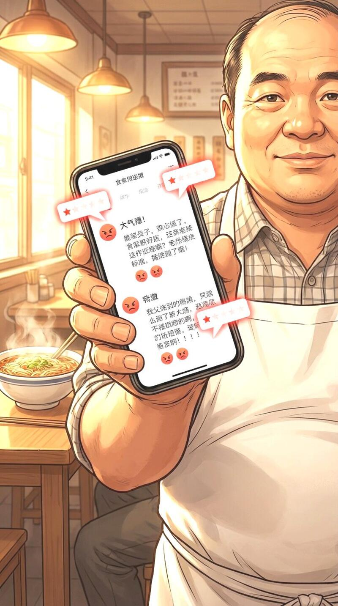
【双人中景】我和王叔坐在面馆里聊天。面前放着一碗我"顺便"点的红烧牛肉面（赊账的）。
我："王叔，你上次被写一星差评的事……"
王叔（脸色一变）："别提那个！说我的面'又贵又难吃'，我开了二十年店，第一次被说难吃！一碗面才十二块，贵？！"
我："那你怎么回复的？"
王叔："我回了个'你才难吃'。然后被平台警告了。"
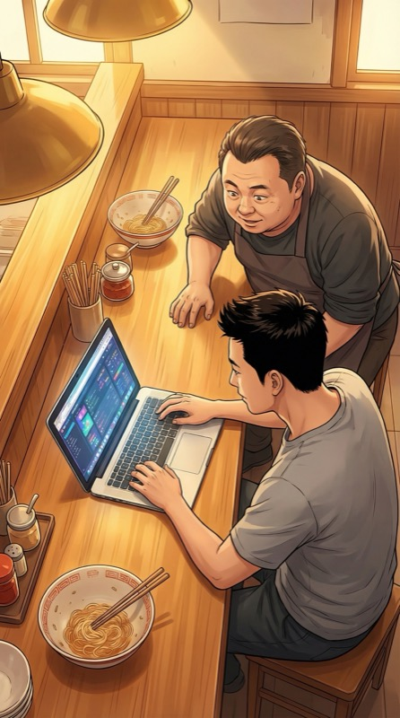
【中景 · 俯拍桌面】我打开笔记本电脑，屏幕上显示着我们花了一个小时临时攒出来的AI差评回复工具。
我："看这个——我把那条差评输进去，AI帮你生成回复。"
我按下了生成键。说实话，我心里也没底。阿布说"应该能跑"，但他每次说"应该"的时候，成功率大概是50%。
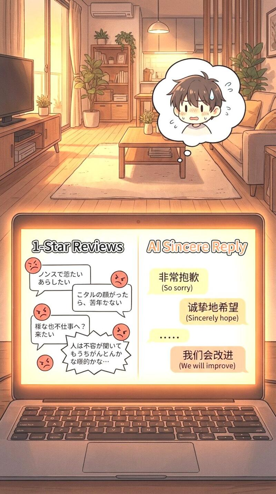
【屏幕特写】AI生成的回复出现在屏幕上：
"亲爱的顾客，非常抱歉给您带来了不好的体验。作为一家开了二十年的老店，您的每一口面都是我们的心意。可能那天我们的状态确实不够好，但这绝不是我们的正常水准。真心希望您能再给我们一次机会，下次来我请您吃一碗我最拿手的红烧牛肉面，让您感受到我们的诚意。——老王"
（这个AI……真的觉得对不起顾客。比我们都真诚。）
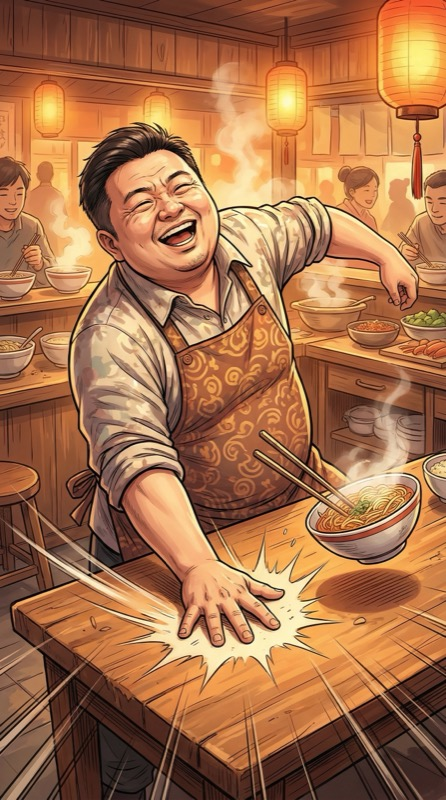
【半身 · 特写】王叔看完回复，先是愣了三秒，然后一巴掌拍在桌上，哈哈大笑。
王叔："哈哈哈哈！写得比我儿子的作文都好！这个'真心希望您再给我们一次机会'——我自己都被感动了！"
啪——（拍桌声）
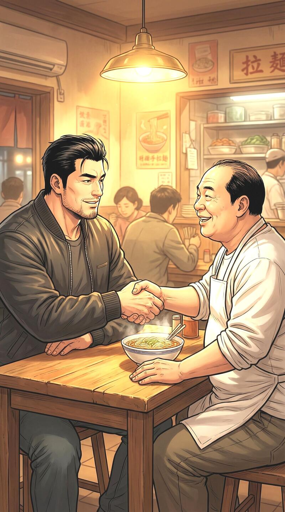
【双人中景】王叔竖起大拇指。我长出一口气，如释重负地笑了。
王叔："行！这个我买！多少钱？"
我："一个月……99？"
王叔："贵了。"
我："那……69？"
王叔："行。从你的面钱里扣。"
（我的第一个付费客户。月收入69块。扣完我还欠他200多。但——成了！）
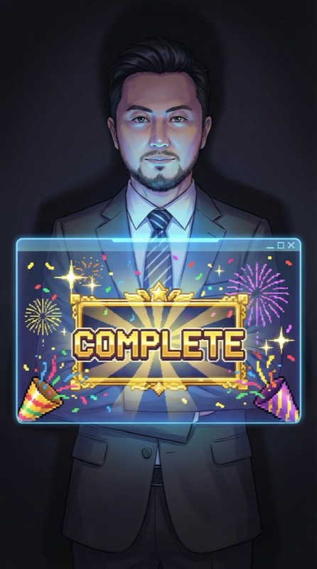
【系统界面 · 特效】金光四射的"任务完成"庆祝画面，但特效像2005年的Flash动画，五彩纸屑的像素都数得清。
🎊 叮叮叮！任务完成！🎊
🎁 恭喜获得随机Buff！
「社交恐惧消除 × 1」
效果说明：永久消除目标的社交恐惧症。
注意：目标随机分配，不一定是宿主本人。
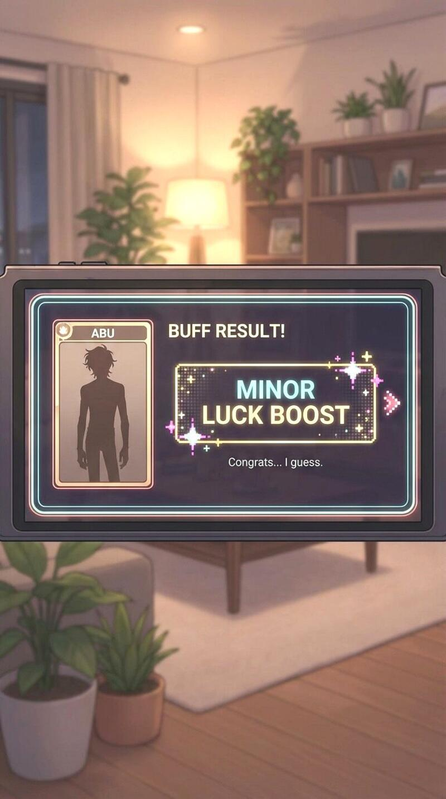
（等等——"目标随机分配"？"不一定是宿主本人"？？）
话音刚落——
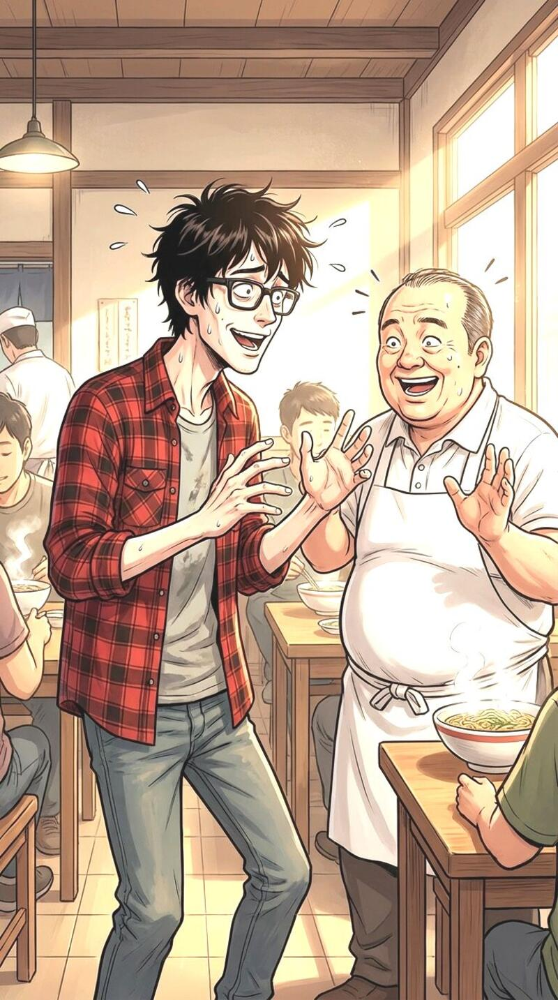
【三人中景 · 办公室】阿布突然站了起来。他放下键盘，转向苗苗，张开嘴——
阿布："苗苗你知道吗今天我debug的时候发现了一个特别有意思的问题就是我们的数据库连接池的配置其实可以优化百分之三十你有没有兴趣听我讲一下另外你今天穿的这个卫衣挺好看的——"
苗苗的嘴巴张成了O型。我的嘴巴也张成了O型。
阿布。那个跟快递员说话都结巴的阿布。在滔滔不绝。而且停不下来。
阿布（继续）："对了我一直想说其实我觉得你们每次点外卖都点错了那个黄焖鸡其实隔壁那家更好吃——"
（Buff是真的。但它没给我——给了阿布。这个系统，是认真的吗？！）
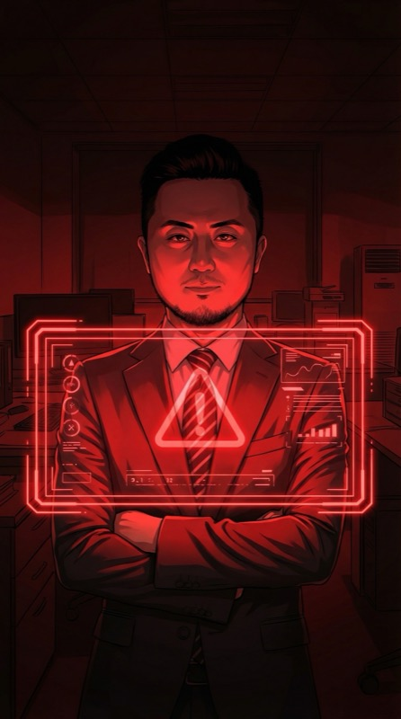
【系统界面 · 红色警告】突然，系统界面变成了刺眼的红色。警告三角标不停闪烁。
检测到同区域存在其他宿主……
建议：保持警惕。
（本提示不提供更多信息。因为穷。升级VIP可解锁详细情报。VIP价格：999,999积分。您当前积分：1。）
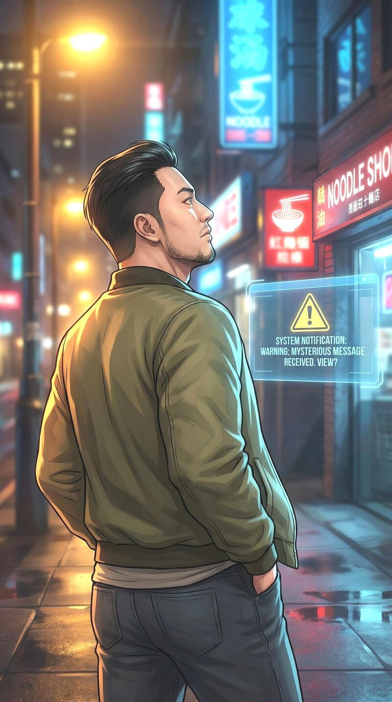
【背影 · 窗户视角 · 悬念感】我走到窗边，推开窗，夜风灌进来。对面的写字楼灯火通明，但有一个窗户——那里的光不太一样。一闪一闪的，像是什么界面的光。
其他宿主。同一个区域。
我不知道那是朋友还是敌人。但我知道一件事——
我不再是一个人了。
对面那个窗户的光，到底是谁？
—— 第二章「同区宿主」· 即将上线 ——